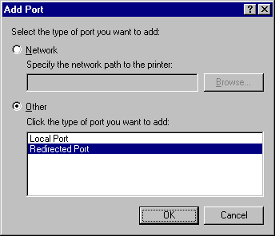
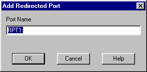
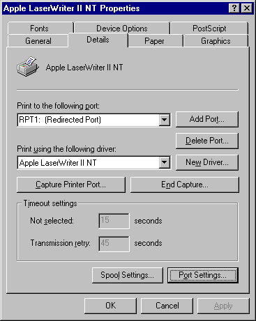
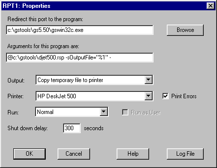
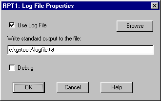
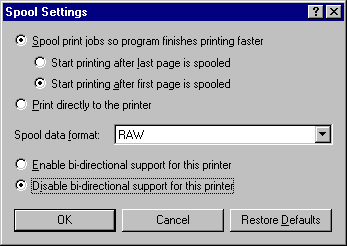
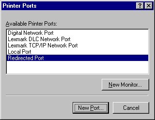

RedMon can be used with any program that accepts data on standard input.
Using RedMon you create redirected printer ports. If you connect a Windows printer driver to the redirected printer port, all data sent to the redirected port will be forwarded by RedMon to the standard input of a program. This program is then responsible for processing the data and producing new output.
A PostScript Windows printer redirected to a RedMon port can shared on a network. When this printer is configured to use Ghostscript and a non-PostScript printer, it appears as a PostScript printer to other network clients.
PostScript written to a RedMon port can be converted to a PDF file using Ghostscript.
RedMon supports Windows 95/98, Windows 2000, NT 4.0 and 3.51.
Configuring RedMon is not a job for novices.
Installation
Uninstallation
Add Port
Port Settings
Log File Properties
What is Ghostscript?
Ghostscript Example
Common Problems
Copyright
Installing RedMon under Windows NT will require Administrator privileges. When using Windows Terminal Server, you must install and configure RedMon on the server console.
Follow the Ghostscript Example for the rest of the configuration.
Windows 95/98 After adding a port, you need to configure it with Port Settings and Spool Settings. Any printer driver connected to this port must have the Spool Settings set to Disable bi-directional support for this printer.
Windows NT After adding a port, you need to configure it with Configure Port. Enable bidirectional support should be disabled.
You cannot use the same port name as an existing port. In particular, you cannot create a redirected port named LPT1:
The Output from the program can be set to one of Program handles output, Prompt for filename, Copy stdout to printer, Copy temporary file to printer or Copy pipe to printer. If one of the latter three, you need to select a Printer.
If you select Print Errors, an error report page will be printed.
The program can be run Normal, Minimized or Hidden.
Run as User is available only under Windows NT and is usually disabled.
A Log File can be configured to receive standard output and standard error. With a log file, you can view error messages that were written to standard output or standard error.
See the Ghostscript Example and Common Problems.
Program handles output
Prompt for filename
Copy stdout to printer
Copy temporary file to printer
Copy pipe to printer
Print Errors
Environment Variables
Run as User
Shut down delay
For example, the program arguments might include:
-sOutputFile="%1"
This method is recommended for use with Ghostscript, and is commonly used with a PostScript printer driver and the Ghostscript pdfwrite device to create a PDF writer.
Do not share a printer which uses RedMon with Prompt for filename. RedMon will not allow this because the Save as dialog box would appear on the server computer, not the client which submitted the print job.
This method should not be used with Ghostscript 5.50 or earlier.
For example, the program arguments might include:
-sOutputFile="%1"
This method is recommended for use with any version of Ghostscript.
For example, the program arguments might include:
-sOutputFile="%%handle%%%h"
This method is recommended for use with Ghostscript and requires Ghostscript 6.0 or later.
Print Errors is most useful when a redirection program writes an error message to standard output, which is captured by the log file.
Print Errors is ignored if Program handles output is selected.
REDMON_PORT is the port name, typically "RPT1:".
REDMON_JOB is the job number, an integer.
REDMON_PRINTER is the name of the printer (e.g. "HP DeskJet 500").
REDMON_MACHINE is the name of the machine that created the job (e.g. "\\Desktop").
REDMON_USER is the name of the user who owns the job (e.g. "JCITIZEN").
REDMON_DOCNAME is the name of the print job (e.g. "Printer Test Page").
TEMP and TMP are directories for temporary files.
Note that under Windows NT, the redirection program runs in the environment of the SYSTEM account. Apart from the above environment variables, very few are set. The registry HKEY_CURRENT_USER and user profile are that of "Default User".
"Run as User" is only available for NT 4 or later Do not enable this if the printer is shared on a network. Remote users can't run programs on your computer. If a remote user tries to submit a job, the EXE will fail with a message like
Initialization of dynamic link library C:\WINNT4\system32\kernel32.dll failed. The process is terminating abnormally.
The spooler service will then be locked up until you stop and restart it.
Run as User is intended for launching a GUI program such as GSview locally via RedRun.
While the program will have the security attributes of the user who submitted the print job, it will have the environment of the SYSTEM account. User profile information will not be correct.
To use a log file, you must check Use Log File and then specify a valid file name for the log file.
If you check Debug, RedMon will write extra debugging messages to the log file. These messages are probably only useful to the author of RedMon. If you want the log file to contain only the standard output of the redirected program, uncheck Debug.
See the Ghostscript Example.
- An interpreter for the PostScript (TM) language and the Adobe Portable Document Format (PDF -- sometimes confused with Acrobat, Adobe's PDF browser/editor product), and
- A set of C procedures (the Ghostscript library) that implement the graphics and filtering (data compression / decompression / conversion) capabilities that appear as primitive operations in the PostScript language and in PDF.
Ghostscript is available for Microsoft Windows, IBM OS/2, DEC VMS and many versions of Unix from
http://www.cs.wisc.edu/~ghost/
Ghostscript is a copyright work owned by Aladdin Enterprises.
GSview is a previewer from Ghostgum Software Pty Ltd, based on Ghostscript. GSview is available from
http://www.cs.wisc.edu/~ghost/gsview/
If you wish to use Ghostscript with RedMon, you should install Ghostscript using the setup program provided with it. Use GSview to make sure that Ghostscript is running correctly before trying to use RedMon.
In the following examples, the Ghostscript command
c:\aladdin\gs6.01\bin\gswin32c.exe
and the Ghostscript include path
-Ic:\aladdin\gs6.01\lib;c:\aladdin\fonts
will both need to be changed to match your version of Ghostscript.
Ghostscript Example for Windows 95/98
Ghostscript Example for Windows NT 4.0
Ghostscript Example with HP LaserJet printer
PDF writer
To print to a HP DeskJet 500 printer whose queue name is "HP DeskJet 500", first create a file named c:\aladdin\djet500.rsp which contains the following:
-Ic:\aladdin\gs6.01\lib;c:\aladdin\fonts -sDEVICE=djet500 -dNOPAUSE -dSAFER -sPAPERSIZE=a4
See the Ghostscript files Use.htm and Install.htm for an explanation of these options.
View the printer properties of an existing printer, select the Details tab, then select the Add Port button. Select Other, Redirected Port then OK.

The RedMon Add Port dialog will appear. Accept the defaults.

Using the Add Printer wizard, create a new printer object for a PostScript printer. A suitable one is Apple LaserWriter II NT.
Open the printer properties of this new PostScript printer, select the Details tab, then change the Print to the following port field to the RedMon port you created, which was probably RPT1:

Select the Port Settings button. The RPT1 Properties dialog will appear.
Enter the program name
c:\aladdin\gs6.01\bin\gswin32c.exe
and the arguments
@c:\aladdin\djet500.rsp -sOutputFile="%1" -
Make sure you include the space and dash at the end of the line. Failure to do this could result in Ghostscript stalling the print queue. Set output to Copy temporary file to printer and set printer to HP DeskJet 500.

If you want to see what is written to stdout (i.e. you want to to look at error messages), see Log File Properties.

Press the OK buttons on the Log File Properties and RPT1 Properties dialog boxes.
From the printer properties of this PostScript printer, select the Details tab, then select the Spool Settings button. Change the Spool data format to RAW. Select Disable bi-directional support for this printer This last change is most important.

From the printer properties of this PostScript printer, select the PostScript tab. Make sure that PostScript header is Download header with each print job. Select the Advanced button to display the Advanced PostScript Options. Data format should be ASCII data. Deselect both Send CTRL+D before job and Send CTRL+D after job.
Printing to this Apple LaserWriter II NT printer will now print using Ghostscript. If you share this printer on a network, it will appear as a PostScript printer to other network clients.
For a list of available Ghostscript printer devices, change to the Ghostscript directory c:\aladdin\gs6.01\bin then run
gswin32c -h
If your printer is not listed, have a look at
http://www.cs.wisc.edu/~ghost/printer.html
to see if one of the existing Ghostscript printer devices will work with your printer.
To print to a HP DeskJet 500 printer whose queue name is "HP DeskJet 500", first create a file named c:\aladdin\djet500.rsp which contains the following:
-Ic:\aladdin\gs6.01\lib;c:\aladdin\fonts -sDEVICE=djet500 -dNOPAUSE -dSAFER -sPAPERSIZE=a4
See the Ghostscript files Use.htm and Install.htm for an explanation of these options.
Start the Add Printer Wizard. On the second page select Add Port.

Select Redirected Port then New Port. The RedMon Add Port dialog will appear. Accept the defaults.
Press Close then Configure Port. The RPT1 Properties dialog will appear.
Enter the program name
c:\aladdin\gs6.01\bin\gswin32c.exe
and the arguments
@c:\aladdin\djet500.rsp -sOutputFile="%1" -
Make sure you include the space and dash at the end of the line. Failure to do this could result in Ghostscript stalling the print queue. Set output to Copy temporary file to printer and set printer to HP DeskJet 500.
If you want to see what is written to stdout (i.e. you want to to look at error messages), see Log File Properties.
Press the OK buttons on the Log File Properties and RPT1 Properties dialog boxes.
Select the Apple LaserWriter II NT v47.0 from the manufacturer and model page of the Add Printer Wizard.
Printing to this Apple LaserWriter II NT printer will now print using Ghostscript. If you share this printer on a network, it will appear as a PostScript printer to other network clients.
For a list of available Ghostscript printer devices, change to the Ghostscript directory c:\aladdin\gs6.01\bin then run
gswin32c -h
If your printer is not listed, have a look at
http://www.cs.wisc.edu/~ghost/printer.html
to see if one of the existing Ghostscript printer devices will work with your printer.
If you want to configure the redirected port later, open the printer properties, select the Ports tab, then Configure Ports. RedMon requires that bi-directional support be disabled, but it appears that it can't be enabled.
-Ic:\aladdin\gs6.01\lib;c:\aladdin\fonts -sDEVICE=ljet4 -r300 -dNOPAUSE -dSAFER -sPAPERSIZE=a4
The Ghostscript command would be
c:\aladdin\gs6.01\bin\gswin32c.exe
and the arguments
@c:\aladdin\ljet4l.rsp -sOutputFile="%1" -
Make sure you include the space and dash at the end of the line. Failure to do this could result in Ghostscript stalling the print queue. Output would be
Copy temporary file to printer
and printer
HP LaserJet 4L
All other settings should be the same as the previous example.
Install a printer driver for a colour PostScript printer, e.g. Apple Color LaserWriter 12/600. If you select a black and white printer such as Apple LaserWriter II NT you will end up with your colour images becoming greyscale.
To use RedMon and Ghostscript to create a PDF writer, you need to use the Ghostscript device pdfwrite. c:\aladdin\pdfwrite.rsp would contain:
-Ic:\aladdin\gs6.0\lib;c:\aladdin\fonts -sDEVICE=pdfwrite -r300 -dNOPAUSE -dSAFER -sPAPERSIZE=a4
The Ghostscript command would be
c:\aladdin\gs6.01\bin\gswin32c.exe
and the arguments
@c:\aladdin\pdfwrite.rsp -sOutputFile="%1" -c save pop -f -
Make sure you include the space and dash at the end of the line. Failure to do this could result in Ghostscript stalling the print queue. Output should be set to
Prompt for filename
All other settings should be the same as the previous examples.
You may wish to rename the printer from Apple Color LaserWriter 12/600 to Ghostscript PDF writer.
Before configuring RedMon, make sure that your redirection program runs correctly from the command line.
Problem: When attempting to print, a message box titled Printers Folder appears saying There was an error writing to RPT1: for the printer (Apple LaserWriter II NT): The system cannot write to the specified device.
RedMon couldn't start the program you specified. Look in the Log File for more details.
Problem: Ghostscript locks up.
You might have forgotten to append a space and dash to the end of the Ghostscript arguments. This is needed to make Ghostscript read from standard input.
Problem: Ghostscript will process some jobs, but not others. If you print to FILE:, Ghostscript is able to process these jobs.
Make sure the Spool Settings are set to Disable bi-directional support for this printer. If this is the problem, the log file with debugging turned on will include the message
REDMON ReadPort: You must disable bi-directional printer support for this printer.
Problem: Attempting to configure a port gives the error message: "This option is not available or not allowed".
You may need to configure the RedMon port from the computer running RedMon, rather than a remote computer.
Problem: Windows NT lpd treats data as text instead of raw.
This isn't a problem with RedMon, but you might just need this information. When printing from Unix to NT, two common methods are to use Samba to write to a RedMon port, or to use lpr to write to the lpd service on NT. The lpd service is not installed by default.
Windows NT lpd sometimes decides to treat the incoming stream as text rather than raw, causing the PostScript code to be printed instead of being interpreted. This can be fixed with an appropriate command option for lpr at the remote Unix box, or at the Windows NT end with regedit, see:
http://www.jsiinc.com/TIP0400/rh0473.htm
Edit the registry and search for:
HKEY_LOCAL_MACHINE\SYSTEM\CurrentControlSet\Services\LPDSVC\Parameters
Add Value name SimulatePassThrough of type REG_DWORD and set it to 1.
Copyright (C) 1997-2000, Ghostgum Software Pty Ltd. All rights reserved.
This file is part of RedMon.
This program is distributed with NO WARRANTY OF ANY KIND. No author or distributor accepts any responsibility for the consequences of using it, or for whether it serves any particular purpose or works at all, unless he or she says so in writing. Refer to the RedMon Free Public Licence (the "Licence") for full details.
Every copy of RedMon must include a copy of the Licence, normally in a plain ASCII text file named LICENCE. The Licence grants you the right to copy, modify and redistribute RedMon, but only under certain conditions described in the Licence. Among other things, the Licence requires that the copyright notice and this notice be preserved on all copies.
Author: Russell Lang, Ghostgum Software Pty Ltd.
Internet: http://www.ghostgum.com.au/
Created automatically by doc2html